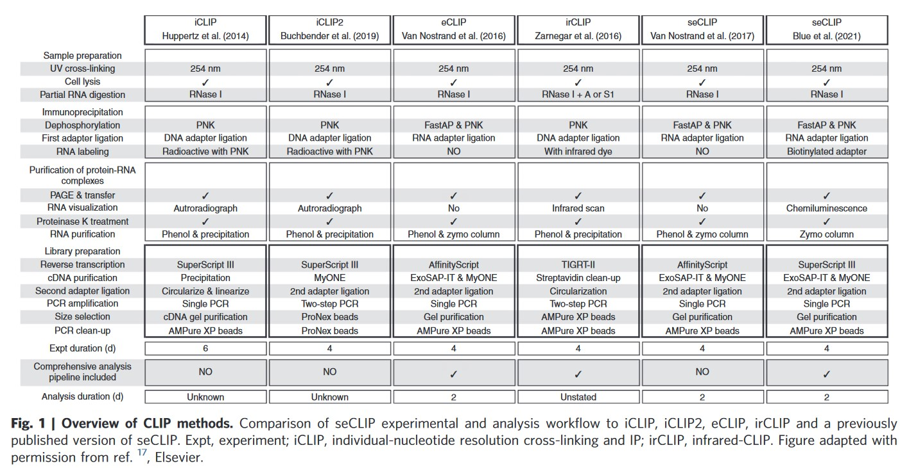
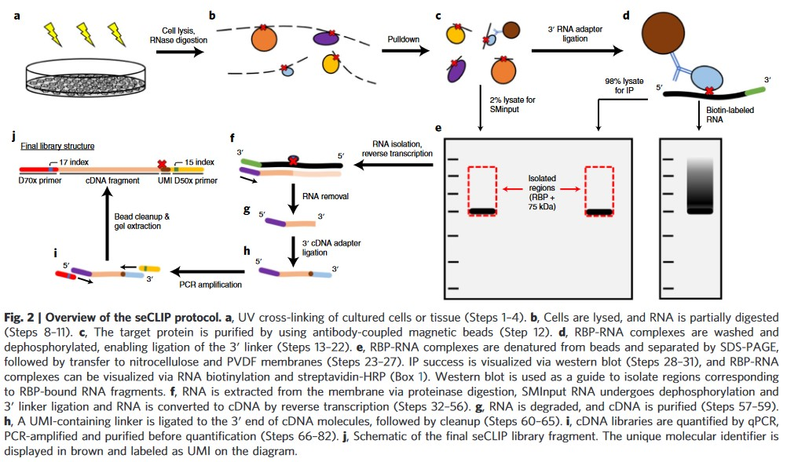

CLIP-seq早已是被广泛使用的protein-RNA结合互作位点研究的方法，但我们自己做的非常少，除了实验室老一辈人有的做过，现在的同学都没人做过，所以只好自己上，钻研一下CLIP的实验方法。
有些抑制剂和磷酸酶，如果没有，可尝试不加。
参考: Transcriptome-wide identification of RNA-binding protein binding sites using seCLIP-seq
 Reagents
- Dulbecco’s PBS （DPBS）：细胞解离前，需采用不含钙和镁的制剂从培养物中冲洗掉螯合剂。
- Lysis：
- high-salt wash buffer
- wash buffer
- DNase
- RNase I, 100 U/μl (Invitrogen, cat. no. AM2295)
- murine RNase inhibitor
- FastAP alkaline phosphatase（碱性磷酸酶）. 1 U/μl (Thermo Scientific, cat. no. EF0652)
- 10× PNK7 buffer. PNK buffer contains 700 mM Tris-HCl pH 7 and 100 mM MgCl2. This buffer is stable at −20 °C for ≥6 months.
- PEG 8000
protocol step by step
Sample preparation and UV crosslinking (fig2a)
Timing：2-3h
- 贴壁细胞用DPBS洗一遍，然后添加足够预冷的DPBS覆盖单层细胞（统计细胞数量）
- 将crosslinker的金属块预冷后，放回crosslinker
- 将培养皿水平放到预冷金属块上，打开盖子，进行交联
- irradiation: 254nm
- quantity: 400mJ/cm2 once
- 交联完毕，马上用移液枪刮吹细胞，转移到离心管中，再用DPBS洗一遍，将剩余细胞转移到离心管中
- 4°C 300g离心3min，去上清，再用DPBS重悬细胞，至20 million cells/ml（或者其他理想浓度）
- 将细胞悬液按照理想的细胞数量，进行分装。分装后，4°C 300g离心3min，去上清。若不立即进行后续操作，可冻存于-80°C
Pause point：Cross-linked cells or tissue can be used immediately for lysis and IP or stored at −80 °C until use.
Bead preparation
以下步骤均需预冷的buffer
提前将lysis, high-salt wash and wash buffers预冷
Timing：1h
- 用500 ul预冷的lysis buffer wash beads 2次。注意不要震荡。弃去buffer，用100 ul lysis buffer重悬beads
- 每个IP样品，向washed beads中添加10ug的RBP-specific antibody，在rotator上室温混匀45min
10ug对于很多抗体是适宜的量，当然可以进行优化
Cell lysis, RNase digestion and IP
Timing：3h or overnight
- 向预冷的lysis buffer，加入蛋白酶抑制剂。用1ml的proteinase inhibitor+cold lysis buffer混匀细胞。将管子放在冰上裂解5min
- 在4°C下，超声仪低功率处理样品5min，30S on 30S off。样品置于冰上
- 在冰上，用DPBS以1：25的比例稀释RNase I。提前预热热混仪到37°C。向裂解样品中，加入5 ul Turbo DNase和10 ul的diluted RNase I，混匀。立即放到预热到37°C的热混仪上，以1,200 rpm的晃动频率，孵育5min整，然后置于冰上。立即加入11ul的murine RNase inhibitor。Centrifuge at 15,000g for 10 min at 4 °C.
- 离心的同时，用500ul的lysis buffer清洗两次上述准备好的beads。清洗后，离心除去剩余的wash buffer。将cleared lysate转移到antibody-bound beads，注意不要吸到细胞残片。4°C rotate 2h或者过夜（建议过夜）。
Dephosphorylation of IP samples
Timing: 1h
- 将lysate颠倒混匀。每个lysate（包括beads），转移20ul到两个新管子里，放在冰上暂存，待用（直到step23）。这部分用于做size-matched input samples (SMInput)，一份用于跑RNA gel，一份用于做western blot
- 用磁力架，将beads和lysate分离开，并用500ul high-salt wash buffer洗两遍beads。为了防止盐浓度的突然变化破坏antibody-RBP复合物间的相互作用，采用过渡清洗的方法：加入500ul high-salt wash buffer，混匀，再加入500ul的wash buffer。先这样洗两次。再用wash buffer洗三次。
- 轻柔地spin down beads，除去残留的wash buffer。用dephosphorylation master mix重悬beads，轻弹管身，混匀。dephosphorylation master mix配方如下（每个样品的量50 ul）：
| Component | Amount | Final |
|---|---|---|
| H2O | 38 | - |
| 10× FastAP Buffer | 5 | 1x |
| Murine RNase inhibitor | 2 | 80U |
| Turbo DNase | 2 | 4U |
| FastAP enzyme | 3 | 3U |
| Total | 50 | - |
- 将反应体系，在37°C热混仪上，1,200 rpm摇10 min。这一步反应会去掉RNase I切割后，留在3’的磷酸基团。在孵育的同时，准备PNK master mix（下表是每个样品的量）：
| Component | Amount (ul) | Final |
|---|---|---|
| H2O | 126 | - |
| 10× PNK7 buffer | 20 | 1x |
| T4 PNK enzyme | 4 | 40 U |
| total | 150 ul | |
- 不需要去除 dephosphorylation mix，直接加入PNK master mix，继续在37°C热混仪上摇20 min。T4 PNK确保RNA片段3’ end完全去磷酸化，准备好3’ end ligation.
- 加200 ul high-salt wash buffer，混匀，磁性分离beads和上清，去除上清。继续使用过渡清洗的办法，先加500 ul high-salt wash buffer，混匀，再加入500 ul wash buffer，除去上清。然后用500 ul wash buffer洗三次。
❗CRITICAL STEP：
(Optional) Before carrying out 3′ ligation in the next steps, reserve 10% of the IP samples for biotin labeling to visualize the RNA cross-linked to your RBP of interest (see Box 1 for further explanation).
3’ RNA adapter ligation of IP samples
- 在室温下，准备3’ RNA adapter master（每个样品用量）：
| Component | Amount (ul) | Final |
|---|---|---|
| H2O | 8.4 | - |
| 10× RNA ligase buffer (no DTT) | 3.0 | 1.2x |
| 0.1 M ATP | 0.3 | 1.2 uM |
| 100%DMSO | 0.9 | 3.6% |
| 1% (vol/vol) Tween-20 | 0.6 | 0.024% |
| 50% (wt/vol) PEG 8000 | 9.0 | 18% |
| Murine RNase inhibitor | 0.4 | 0.8 U |
| T4 RNA ligase high-concentration enzyme | 2.4 | 72 U |
| Total | 25 | - |